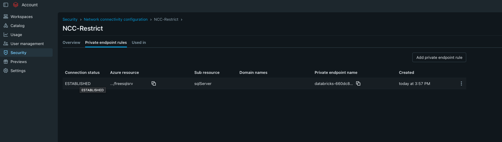

02
Connecting an on-premises data source to Microsoft Fabric.
Private Link Service Direct Connect, managed private endpoints, DNS, and JDBC troubleshooting in one end-to-end build.
Read the articleBuild / learn / troubleshoot / share
Practical notes from the places where architecture meets reality: private networks, data platforms, identity, and the small details that make production systems hold together.
A working notebook for engineers who would rather verify the path than trust the diagram.
A screenshot-driven lab report on OAuth U2M, private endpoint approval, DNS validation, and TCP connectivity from Serverless compute.
Read the field note
NCC / ESTABLISHEDPrivate Link Service Direct Connect, managed private endpoints, DNS, and JDBC troubleshooting in one end-to-end build.
Read the articleA compact checklist for validating DNS, routes, firewalls, and private access before blaming the service.
In the workshopNotes on balancing security, observability, and the human cost of a platform that is too clever.
On the deskThe notes cluster around the seams between services, because that is where the interesting failures usually live.
About the notebook
CloudDusk is a practical cloud and data engineering journal. Every note aims to leave behind something testable: a topology, a command, a failure mode, or a clearer next step.
Open channel
Corrections, topic ideas, and hard-earned lessons are welcome here.